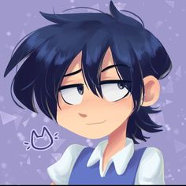
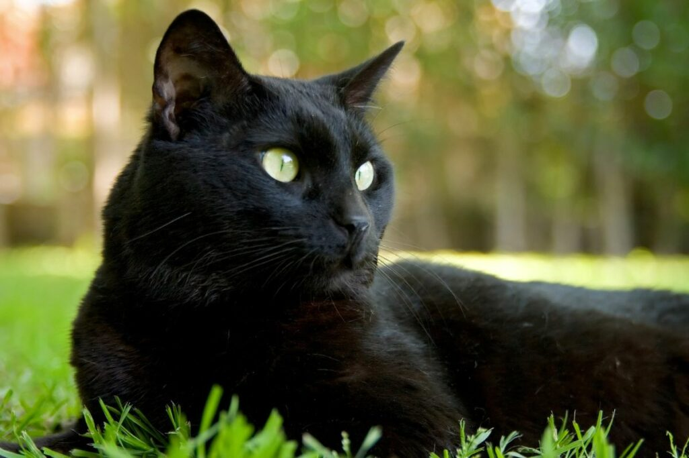
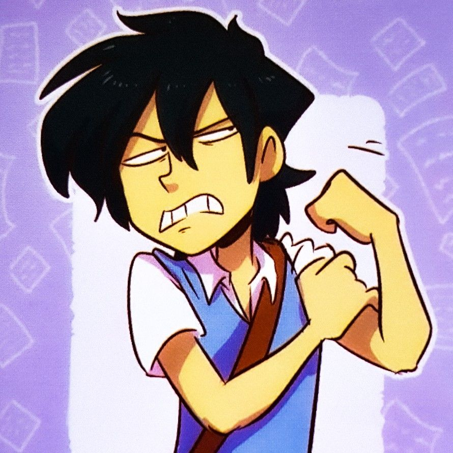

Esta imagem foi selecionada para a fabricação de cahveiros de dupla imagem e bottoms do personagem Franz, em Lebre & Coelho

Este animal é o ser vivo que mais pode respresentar o personagem, devido a aparência calma e discreta, porém um verdadeiro poço de curiosidade, assim como gatinhos em um geral.

Imagem recortada de uma página exclusiva do livro físico de Lebre & Coelho.